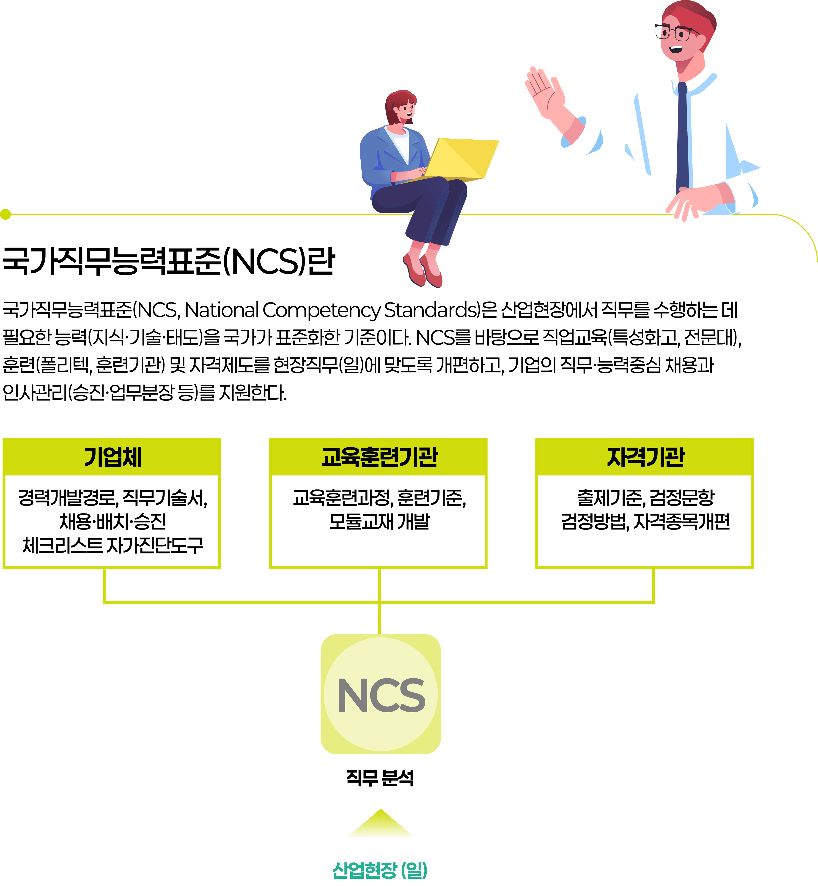
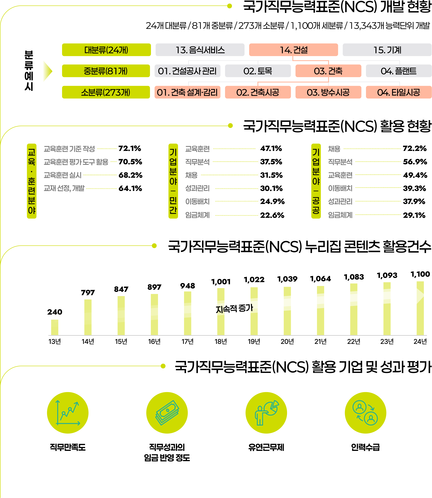

테마 infographic
국가직무능력표준(NCS)
한국산업인력공단은 산업현장의 기술 변화와 직무 수행에 필요한 능력(지식·기술·태도)을 국가가 표준화한 기준인, 국가직무능력표준(NCS)을 운영하고 있습니다.
인포그래픽으로 보는
국가직무능력표준(NCS)
개념 및 성과


한국산업인력공단은 산업현장의 기술 변화와 직무 수행에 필요한 능력(지식·기술·태도)을 국가가 표준화한 기준인, 국가직무능력표준(NCS)을 운영하고 있습니다.

